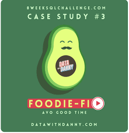

Performed basic data wrangling with Python. Carried out correlation analysis, association analysis(Chi- square test) and One-way ANOVA to find out relationships between variables and significant causes of employee attrition.
Built a report containing recommendations on how to mitigate employee attrition with Tableau.
Performed data exploration which was broken down into Data Wrangling, Feature Engineering, Univariate, Bivariate and Multivariate Data Exploration to identify trends and insights with Python.
Summarized key findings in a slide deck

Created the database, schema and tables in PgAdmin.
Queried the data to answer key business questions.
Built a summary dashboard of key findings with Tableau.
Loaded the provided data into Excel and performed preliminary data assessment and cleaning performed therein. Identified the best customers for the company to target using the Recency, Frequency and Monetary (RFM) model analysis.
Built a summary dashboard representing key findings with Tableau.
Created the database, schema and tables in PgAdmin and populated the tables with the data.
Identified and cleaned up data quality issues like wrong data types, comma-separated values, inconsistencies, unintuitive variable names etc.
Queried the data to answer key business questions and obtain insights.
Gave recommendations based on the insights gotten.
Analyzed the data from WeRateDogs twitter account using python to find interesting insights.
Performed data wrangling and exploratory data analysis.
Loaded the data into Big-Query and created tables.
Queried the data to identify countries with high and low population index,
factors related to population growth and factors that influence the population of a country.
Analyzed hospital data with python to find out factors that contributes to patients keeping to medical appointments in a hospital in Brazil.